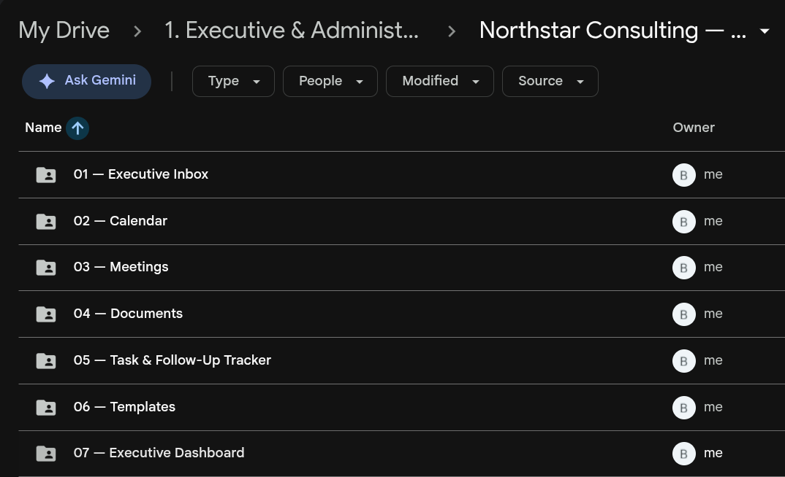
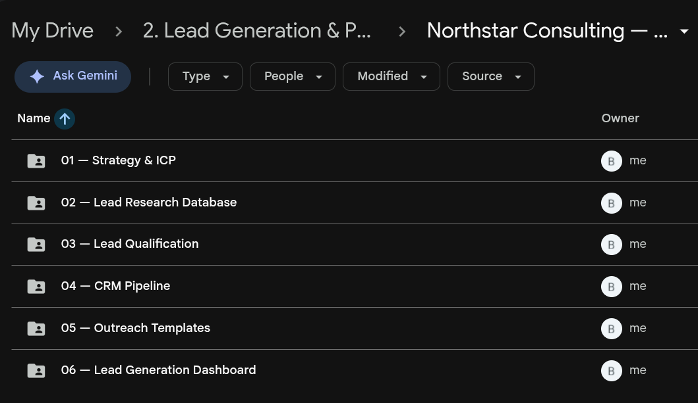
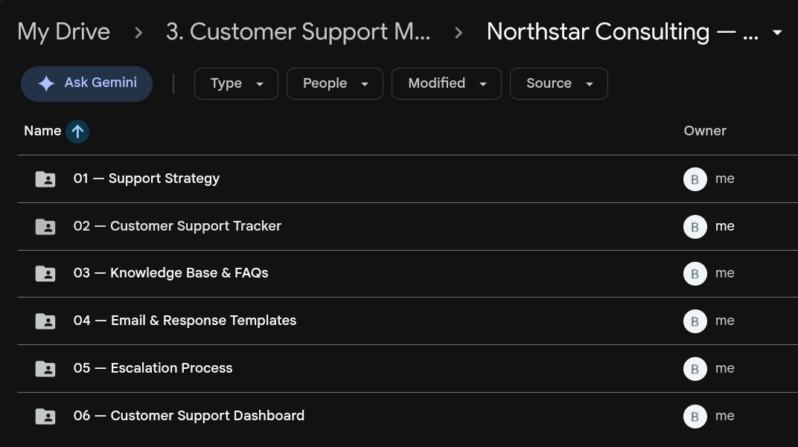
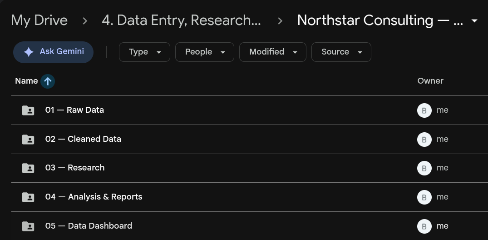
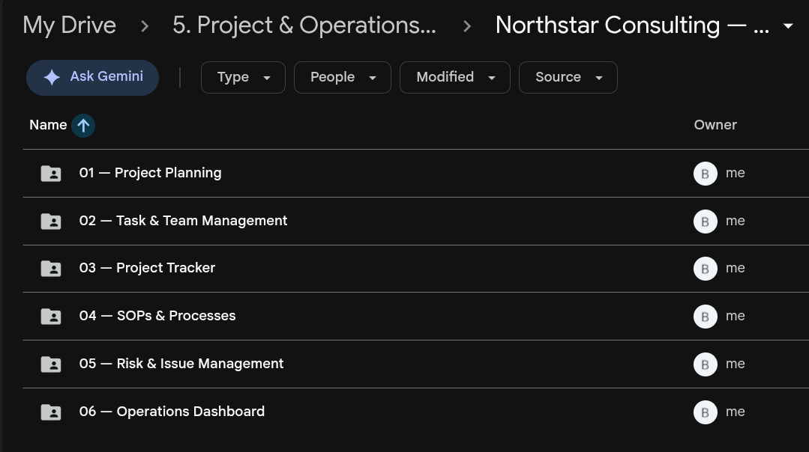

Virtual & Administrative Support
Inbox organization, calendar management, meeting coordination, document organization, task tracking and administrative workflows.
Virtual Assistant · Operations · Data & Digital Support
Practical support across administration, operations, research, data, customer support and digital workflows, helping businesses bring structure to the work behind the scenes.
What I Do
Six areas where I help bring structure, clarity and reliability to day-to-day operations.
Inbox organization, calendar management, meeting coordination, document organization, task tracking and administrative workflows.
Project tracking, task coordination, SOP documentation, process organization, follow-ups and operational support.
Prospect research, lead qualification, CRM organization, pipeline tracking, outreach preparation and follow-up systems.
Support ticket organization, response workflows, FAQ/knowledge-base organization, email templates, escalation processes and customer follow-up.
Data entry, data cleaning, research, spreadsheet organization, analysis, reporting and dashboards.
Basic website support, digital content organization, simple web updates, digital workflow support and basic UI/UX support.
Selected Work
A selection of independent work demonstrating practical business workflows.
These are independent portfolio demonstrations created to demonstrate practical business workflows. They are not presented as paid client engagements.

Project 01
A structured executive support workflow covering inbox organization, calendar management, meetings, documents, task tracking, follow-ups and executive reporting.

Project 02
A structured prospecting workflow covering ideal client research, lead qualification, CRM pipeline management, outreach templates and reporting.

Project 03
A structured customer support workflow covering ticket tracking, support priorities, knowledge-base organization, response templates and escalation processes.

Project 04
A practical data workflow covering raw data organization, data cleaning, research questions, analysis, reporting and dashboard development.

Project 05
A structured operations workflow covering project planning, task management, project tracking, SOPs, risk management and operational reporting.
How I Work
01
Understand the task, priorities, context and desired outcome.
02
Create structure around information, tasks, documents and workflows.
03
Complete the work carefully and keep progress organized.
04
Document what worked and identify practical ways to make the workflow clearer or more efficient.
About
I'm Blessing Okorie-Oruh, a virtual assistant focused on helping businesses stay organized and move work forward with clarity. My approach centers on organization, practical support, attention to detail, research, documentation, communication, structured workflows and digital tools.
I work across administration, operations, research, data, customer support and digital workflows, helping teams bring order to the day-to-day work that keeps everything running.
My focus is on practical, reliable support rather than promises. I believe good work comes from understanding the task, creating the right structure, executing carefully and finding ways to improve along the way.
Focus areas
Resume
Let's talk about how I can help organize your workload, workflows or day-to-day operations.
Email Meblessing.okorie.va@gmail.com